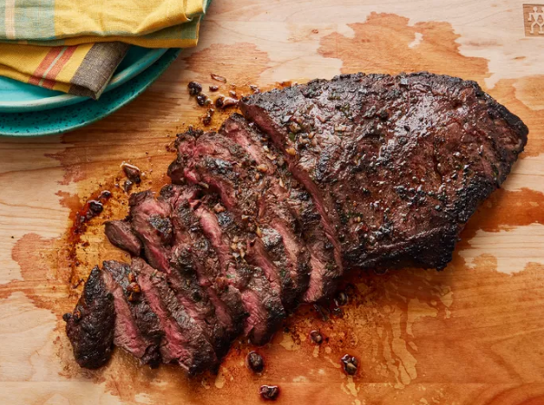

Flat Iron Steak
Home

Description
Flat iron steak is a cut of beef that is taken from the shoulder area of the cow.
It is a flavorful and tender cut of meat that is perfect for grilling.
This recipe is simple and delicious, and it is sure to become a family favorite.
Skip the steakhouse and make restaurant-worthy steak at home. Trust us,
you're going to want to bookmark this irresistible flat iron steak recipe
— you'll come back to it again and again.
Ingredients
- Flat iron steak
- Olive oil
- Garlic
- Thyme
- Butter
- Salt
- Pepper
Instructions
-
Season the steak: Rub the steak with olive oil, garlic, thyme, salt, and pepper.
-
Sear the steak: Heat a cast-iron skillet over high heat. Add the steak and sear
for 3-4 minutes on each side.
-
Finish the steak: Add butter to the skillet and baste the steak with the melted
butter. Remove the steak from the skillet and let it rest for 5 minutes before
slicing and serving.